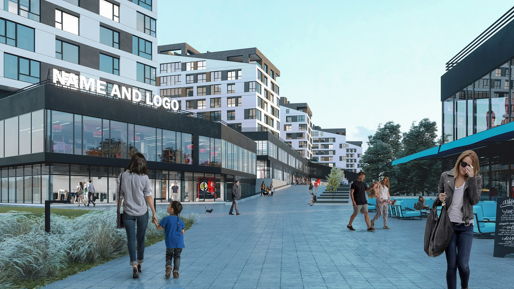
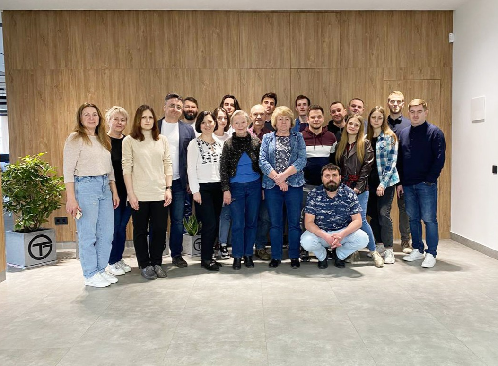

Про нас
Top Gip — це команда професіоналів у сфері будівництва та проєктування. Ми створюємо сучасні рішення для житлових, комерційних і громадських об’єктів, поєднуючи інновації, досвід та індивідуальний підхід до кожного клієнта.
10+
Років досвіду
30+
Професіоналів у команді
200+
Реалізованих проєктів


За багатолітній досвід при проєктуванні широкого спектра забудов, ми дійшли висновку, що архітектура - це артоб'єкт, культ особистості з величезними можливостями. Ми побудували нашу практику на креативному мисленні, індивідуальному підході та ергономіці в кожну оселю. Містобудування, приватні будинки, комерційні забудови, житлові комплекси, велике чи мале - для нас важливо все.
Наша команда архітекторів націлена створювати простір, в якому клієнту буде комфортно жити. В проєкті ми концентруємося на деталях та змісті, пов'язуємо архітектуру з навколишнім середовищем. Top Gip - це не просто компанія, а повноцінна концепція по розробці ідей класу люкс. Кожна з них - це оригінальний витвір мистецтва. Ми слухаємо клієнтів, вивчаємо їхні потреби і робимо все, щоб результат був водночас красивим, ергономічним і довговічним.
Top Gip — це про креативність, досвід і турботу. Ми вважаємо, що архітектура може бути не лише функціональною, а й душевною. Для нас кожен новий проєкт — чисте полотно, з якого народжується щось більше, ніж просто будівля.
Наша команда
У Top Gip ми віримо, що архітектура починається не з креслень, а з людей. Саме тому, наша команда - одна з головних цінностей компанії.
Ми разом створюємо цілісні рішення - від концепції до готового
об'єкта, поєднуючи креативність і технічну точність:
- архітектори шукають гармонію між естетикою та функціональністю
- інженери-конструктори дбають про надійність і сучасні технології
- дизайнери додають стилю та унікальності кожному простору
- керівники проектів допомагають злагоджено реалізовувати ідеї на
практиці
Нам важливо, щоб у колективі панувала дружня атмосфера. Ми підтримуємо один одного, ділимося зняннями і постійно навчаємось новому. Завдяки цьому, кожен наш проєкт - це не просто будівля, а спільний результат людей, які люблять свою роботу. Top Gip — це команда, яка творить для вас і разом з вами.

